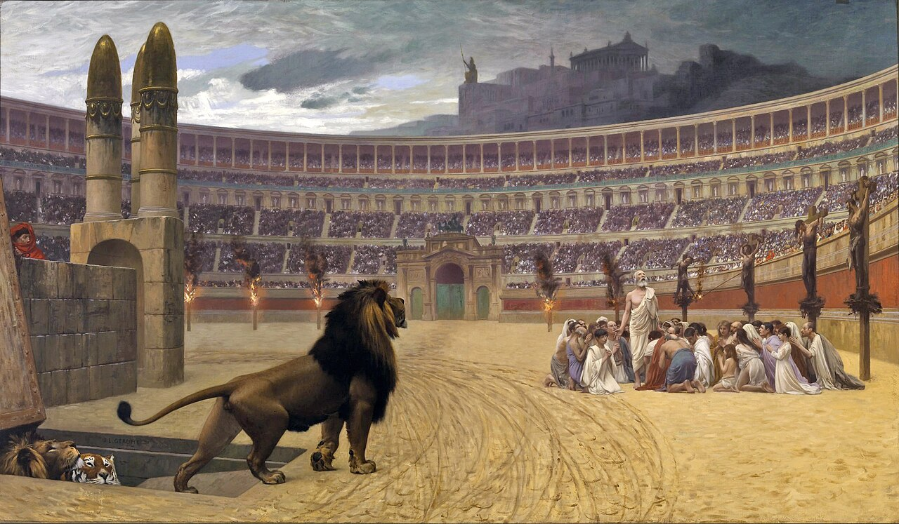
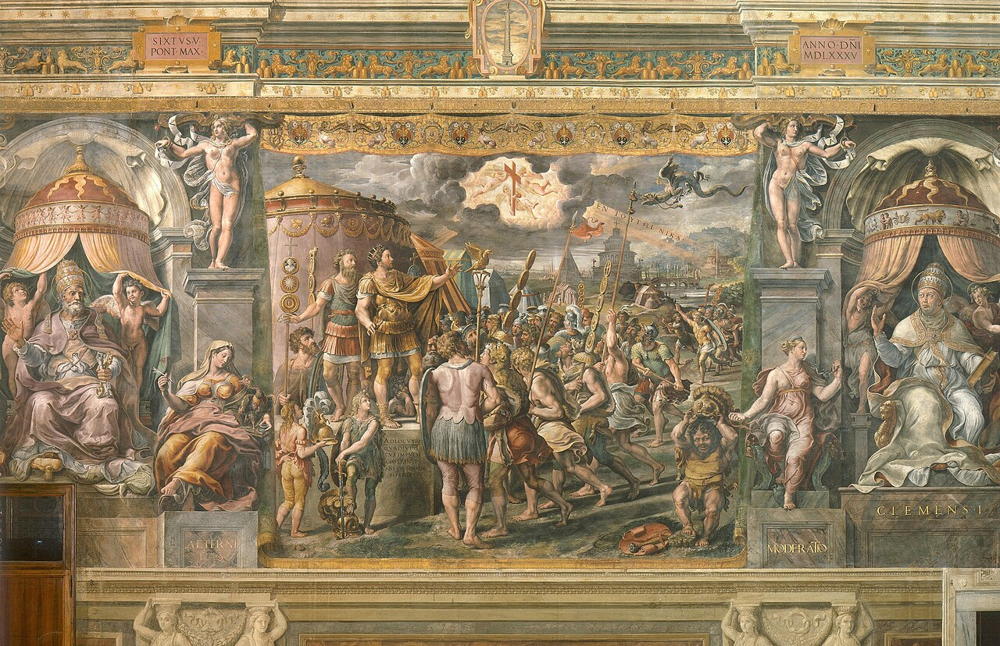
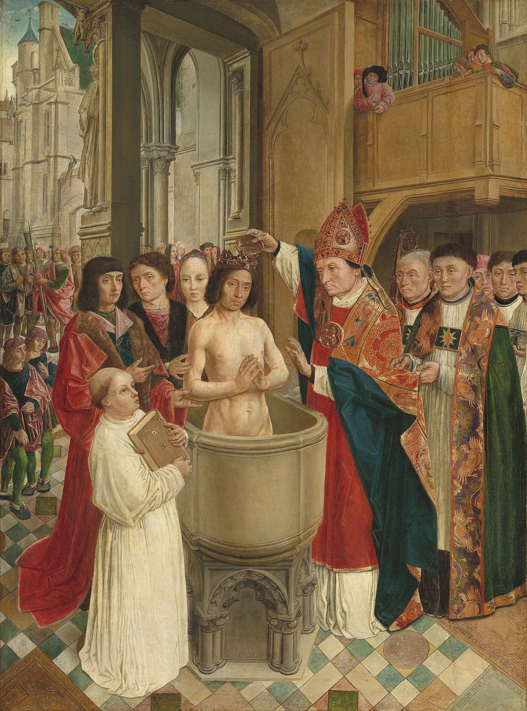
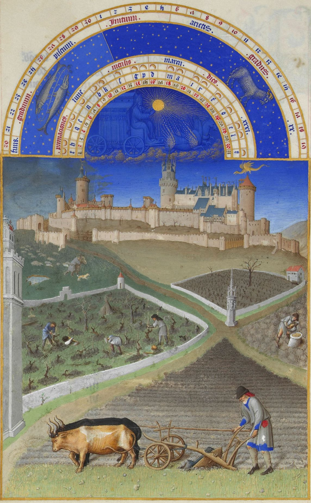
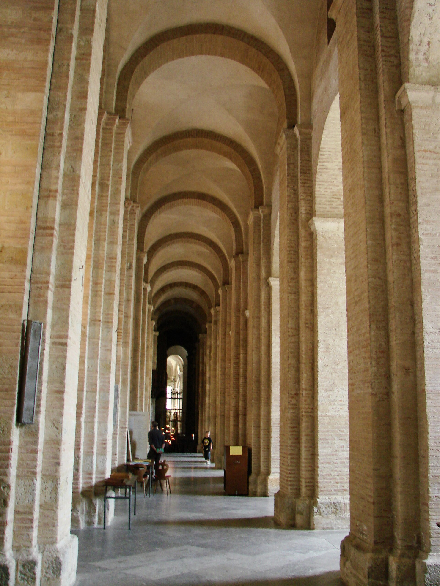
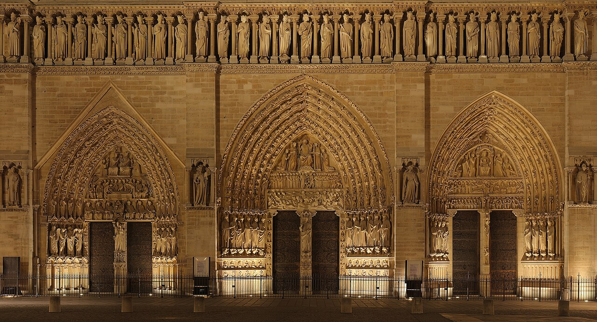
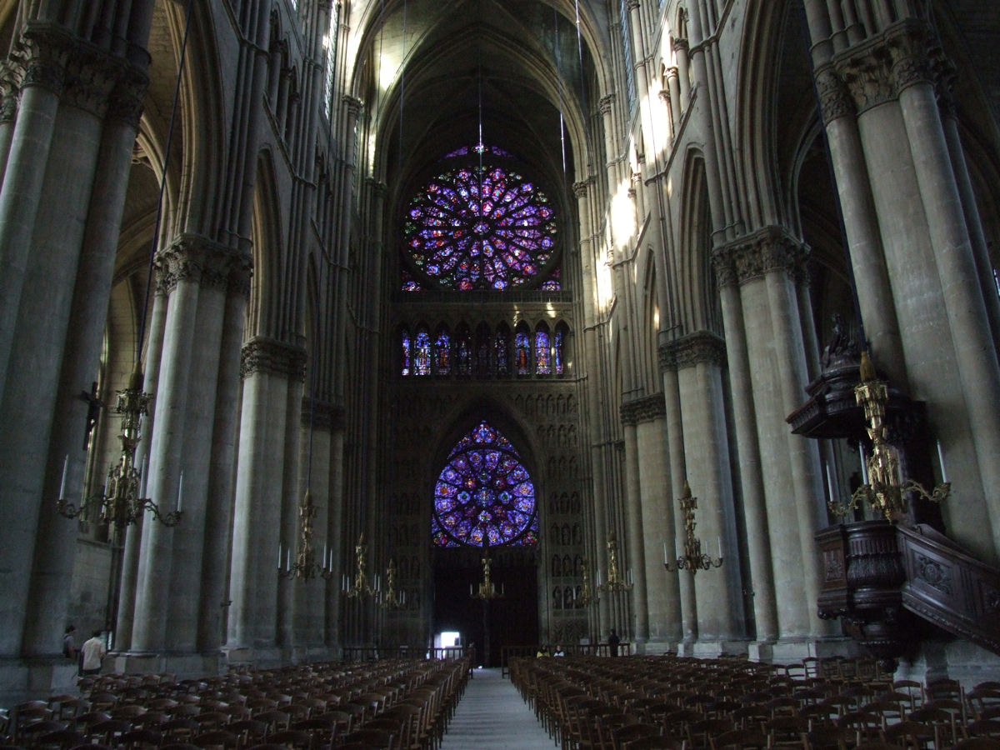
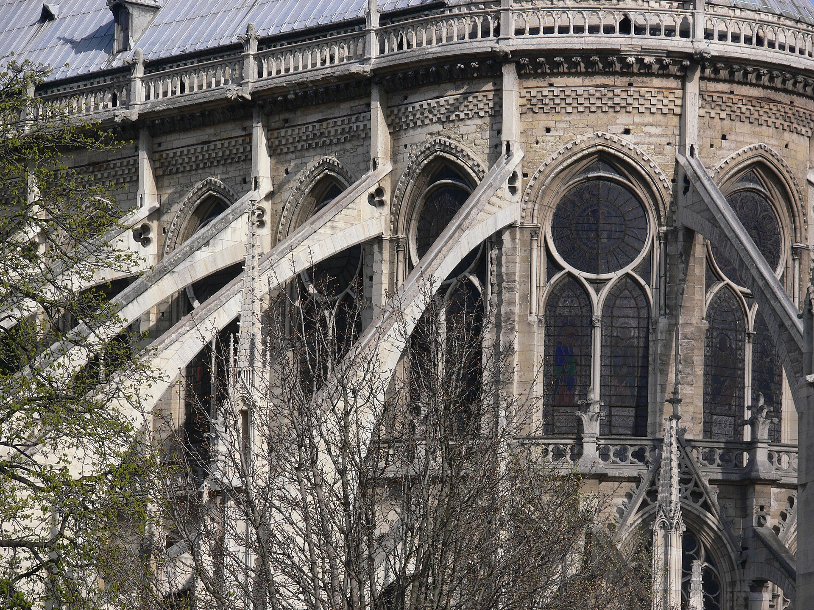
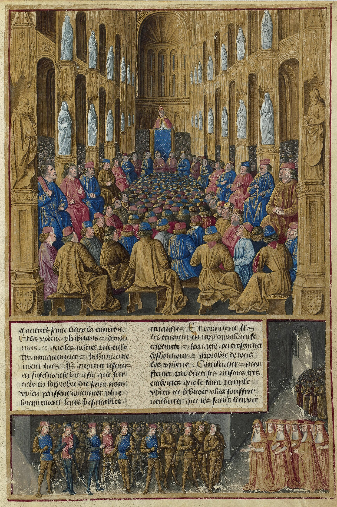
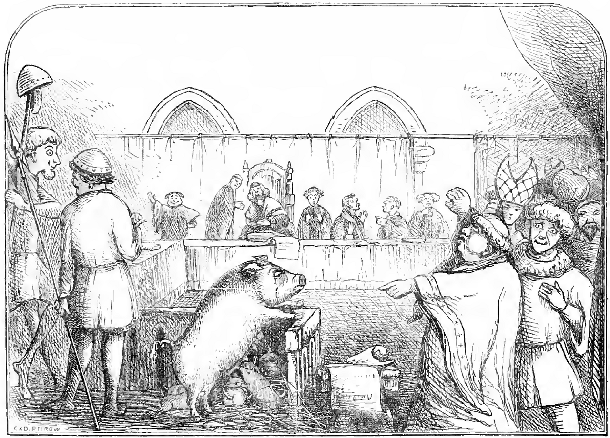

Histoire et éducation à la citoyenneté
05 / 12 réalité sociales
La christianisation de l'Occident
Ve au XIe siècle · L'influence de l'Église
- chrétienté
- Croisade
- culture
- éducation
- Église
- féodalité
- Occident
- pouvoir
- science

Mise en contexte
Le terme « Occident » fait référence à un territoire et à une civilisation. L'étude du Moyen Âge et de ses institutions, entre la fin de l'Empire romain et la Renaissance, permet de rendre compte de l'influence de la religion chrétienne dans la constitution de l'Occident. L'Église chrétienne s'impose alors aux pouvoirs féodaux, imprègne de ses valeurs la société et contribue au développement des savoirs. La religion demeure aujourd'hui une importante référence identitaire pour de nombreuses sociétés.
Concepts à l'étude
- Chrétienté : l'ensemble des territoires et des peuples qui partagent la religion chrétienne.
- Croisade : une expédition à la fois militaire et religieuse organisée par l'Église pour délivrer la Terre sainte.
- Culture : les croyances, les arts et les manières de vivre que les membres d'une société ont en commun.
- Éducation : la transmission des savoirs, assurée au Moyen Âge surtout par l'Église et ses écoles.
- Église : l'institution qui regroupe et dirige les chrétiens, avec le pape à sa tête.
- Féodalité : l'organisation de la société autour des liens entre seigneurs et vassaux, en échange de terres et de protection.
- Occident : le territoire et la civilisation de l'Europe de l'Ouest, unis par l'héritage romain et la religion chrétienne.
- Pouvoir : la capacité de commander et de se faire obéir, partagée au Moyen Âge entre les rois, les seigneurs et l'Église.
- Science : les connaissances sur le monde, conservées et copiées au Moyen Âge dans les monastères.
Situer dans le temps
« Le Moyen Âge occidental est traditionnellement situé entre la chute du dernier empereur romain d'Occident (476) et la découverte de l'Amérique (1492), même si ces deux dates sont arbitraires et restent discutables. » (Source : Encyclopédie Larousse)
Le christianisme et l'Empire romain
Les débuts du christianisme
Le christianisme est fondé avec la naissance et la mort de Jésus de Nazareth au 1er siècle. Après sa mort, ses disciples écrivent les Évangiles, documents très importants dans la religion catholique puisqu'ils racontent les enseignements et l'existence de leur Sauveur. Ils entreprennent donc de répandre son message dans l'Empire romain, qui continue d'agrandir ses frontières. Toutefois, avant de devenir la religion la plus pratiquée au monde, le christianisme parcourra un long chemin.
(Source : Alloprof)
La persécution des chrétiens

Source
Jean-Léon Gérôme, Jean-Léon Gérôme - The Christian Martyrs' Last Prayer - Walters 37113, Wikimedia Commons. Licence : Domaine public.Grâce à la conversion rapide des gens à cette nouvelle religion, le christianisme se répand rapidement dans l'Empire romain. Cependant, cette popularité croissante inquiète les dirigeants romains qui y voient une menace à leur autorité. Afin de freiner la progression de cette nouvelle religion, on se met donc à persécuter les chrétiens (leur faire subir des traitements cruels). Ceux-ci mourront en grand nombre durant ces années difficiles.
(Source : Alloprof)
La conversion de Constantin et l'édit de Milan

Source
School of Raphael, School of Raphael - Vision of the Cross, Wikimedia Commons. Licence : Domaine public.L'édit de Milan est intimement lié à la conversion de Constantin. Événement qui peut paraître surprenant et qui serait dû à un phénomène mystique : Constantin, alors qu'il était en guerre contre un rival, a vu dans le ciel une croix, puis il a reçu une vision lui disant qu'il gagnerait s'il apposait un signal chrétien sur les étendards de sa légion. In hoc signo vinces, lui aurait dit la vision : « Par ce signe tu vaincras », et le signe était le monogramme grec du Christ, le chrisme.
Aussi nommé « édit de Constantin », l'édit de Milan paraît en 313 et s'inscrit dans le sillage des édits de tolérance. Promulgué par les empereurs romains Constantin Ier et Licinius, il proclame la liberté de culte à toutes les religions et libère la chrétienté des persécutions qu'elle subissait.
Deux édits décisifs
Édit de Milan (313) : tolérance du christianisme dans l'Empire romain. Édit de Thessalonique (380) : le christianisme est maintenant la religion officielle de l'Empire romain.
La chute de l'Empire romain d'Occident en 476
Nombreuses sont les causes ayant mené à la chute d'un des plus grands empires de l'Antiquité.
Une perte d'identité et l'attente du paradis
Les citoyens romains ont peu à peu perdu leurs vertus civiques. Ils auraient, finalement, oublié de défendre l'empire face aux intrusions barbares. L'historien britannique Edward Gibbon considère également l'essor du christianisme comme étant une des causes de la chute. La religion aurait détourné le peuple de la vie quotidienne de l'empire au profit de l'attente des récompenses du paradis.
La romanisation des peuples barbares
À partir du 3e siècle, Rome commence à être menacée par les peuples barbares. D'ailleurs, certains de ces barbares se mettent à vivre au sein même de l'empire et s'allient aux Romains. À cette époque, on trouve même des mercenaires barbares payés pour défendre Rome. Cela nuit grandement à la sécurité de l'Empire : il suffit qu'un peuple barbare soudoie ces mercenaires pour qu'ils le laissent pénétrer au sein de l'empire.
Les barbares envahissent les provinces romaines
L'étendue de l'Empire romain d'Occident entraîne des difficultés grandissantes en matière d'administration. De plus, les ennemis attaquent sur tous les fronts : les Vandales conquièrent ainsi l'Afrique du Nord, la Corse et la Sardaigne tandis qu'en Europe continentale, les Wisigoths et les Suèves gagnent de nouveaux territoires. Rome subit de multiples assauts barbares. En 410, elle est envahie par des Wisigoths. Mais c'est en 476 que la cité tombe définitivement entre les mains du Germain Odoacre. C'est lui qui détrône le dernier empereur romain d'Occident : Romulus Augustule.
Le baptême de Clovis 1er en 498

Source
Master of Saint Giles, Chlodwigs taufe, Wikimedia Commons. Licence : Domaine public.Le baptême de Clovis est un acte fondateur de l'Occident chrétien. D'après Grégoire de Tours, Clovis (le roi des Francs) se convertit en raison de la demande et de l'insistance de sa femme Clotilde. Au cours d'une bataille difficile à Tolbiac (en 496), les Francs repoussent difficilement une attaque des Alamans. Pendant la bataille, Clovis aurait imploré le secours de Dieu en échange de sa conversion. En même temps, les Francs sont attirés par la très riche Aquitaine, aux mains des Wisigoths (qui ne sont pas chrétiens). Ils auraient ainsi l'appui de la population chrétienne de la région et seraient sans doute mieux acceptés comme nouveaux dirigeants.
La société médiévale
Les trois ordres au Moyen Âge
La société médiévale est une société organisée autour de trois ordres :
- ceux qui prient : les hommes d'Église ou le clergé;
- ceux qui font la guerre : les nobles (princes, seigneurs, chevaliers);
- ceux qui travaillent : les paysans.
Il s'agit d'une classification qui se rapproche de celle des trois ordres de la société d'Ancien Régime : clergé, noblesse et tiers état. Ces trois ordres ont été redéfinis par Adalbéron de Laon vers 1020, puis par Gérard de Cambrai, qui souhaitaient ce type d'organisation sociale alors que la France connaissait une crise politique autour de l'an mille (1000).
La féodalité et le lien de vassalité
Source
Auteur inconnu, Hommage au Moyen Age - miniature, Wikimedia Commons. Licence : Domaine public.Entre suzerain et vassal, il existe un réseau de devoirs. Le suzerain protège son vassal, le vassal aide et conseille son suzerain. Ces termes recouvrent des notions précises. Aide et conseil du vassal sont soigneusement codifiés : l'aide peut être une contribution financière, mais elle est pratiquement toujours militaire, avec un service de quarante jours. Le conseil, c'est être présent à la cour du seigneur et, parfois, siéger à son tribunal. La protection accordée par le seigneur est militaire, mais elle est aussi économique, par l'octroi du fief.
Un fief est en général une terre avec tous les droits qui y sont attachés : cela peut aller d'un royaume entier à un quart de village. Parfois ce sera un moulin, ou une église, ou même une rente en argent. L'important est que le fief reste la propriété du suzerain, dont le vassal a l'usage. Le schéma suivant résume cette chaîne de dépendances, du roi jusqu'aux paysans. Ces derniers, appelés censitaires parce qu'ils paient le cens, ne sont pas des vassaux : ils reçoivent du seigneur une terre et sa protection en échange du cens, de la taille, des banalités et des corvées.
La seigneurie au Moyen Âge
L'organisation de la seigneurie

Source
Limbourg brothers / Barthélemy d'Eyck, Les Très Riches Heures du duc de Berry mars, Wikimedia Commons. Licence : Domaine public.Au Moyen Âge, la seigneurie s'organise autour d'un château fort ou d'une abbaye. Sur celle-ci se trouvent un seigneur et sa famille, des paysans qui travaillent dans les champs ainsi que des artisans qui produisent de nombreux outils et objets du quotidien. Paysans et artisans vivent dans des villages, dans lesquels se dresse l'église.
Des paysans dépendants du seigneur
Les paysans ont plusieurs obligations envers leur seigneur. En effet, ils doivent :
- payer le cens (location de sa terre);
- payer la taille (impôt perçu lorsque le seigneur le souhaite);
- payer les banalités (taxes perçues lors de l'utilisation du moulin, du four, du pressoir, etc.);
- réaliser les corvées (l'entretien du château, des routes et des ponts, le curage des fossés, etc.). En échange de tout cela, le seigneur s'engage à octroyer une terre aux paysans et à leur assurer sa protection en cas d'attaque.
L'exemple de la Saint-Jean
« À la Saint-Jean (24 juin), les paysans de Verson doivent faucher l'herbe des prés du seigneur et porter le foin au manoir. Après, ils doivent curer le canal. En août, ils doivent moissonner les blés du seigneur et les porter à sa grange. Ils doivent le champart sur leurs terres. Ils le chargent sur leurs charrettes et le portent à la grange du seigneur. Après, vient le début septembre, où ils paient le porçage : le vilain gardera deux pourceaux sur trois. Et après vient la Saint-Denis (9 octobre), où les vilains sont tout étonnés qu'il leur faille payer le cens. Après, ils doivent encore la corvée : quand ils auront labouré la terre du seigneur, ils iront chercher le blé à son grenier et ils devront le semer. À Noël, ils doivent des poules. À Pâques, ils doivent de nouveau la corvée. » (D'après la Complainte des Vilains de Verson, 13e siècle)
La seigneurie en maquette
Fais tourner la maquette · Choisis un lieu ou une obligation
Glisse pour tourner · Clic droit ou Maj pour déplacer · Ctrl + molette pour zoomer
Modèles 3D : Kenney et Quaternius (CC0)
Une année au village
Les lieux
Les obligations
La vie dans une seigneurie
La seigneurie est le domaine d'un seigneur. Elle s'organise autour d'un château fort ou d'une abbaye. Les paysans y vivent et y travaillent. Ils doivent au seigneur des taxes et des journées de travail.
Cette maquette montre une seigneurie type. C'est un modèle simplifié, pas un lieu réel : chaque seigneurie était différente, mais on y retrouvait souvent ces lieux.
- Fais tourner la maquette, puis clique sur un numéro ou sur un bâtiment pour découvrir un lieu.
- Choisis une obligation : des flèches montrent ce que les paysans doivent au seigneur ou à l'Église.
- Suis une année au village avec les paysans de Verson.
Le savais-tu? Dans une seigneurie, presque tout le monde travaille la terre. Les paysans forment de loin le groupe le plus nombreux de la société.
Le château fort
La demeure du seigneur
Qui vit ou travaille ici?Le seigneur y vit avec sa famille, ses chevaliers et ses serviteurs. C'est aussi là qu'il rend la justice : il peut punir ceux qui lui désobéissent. Près des murs, sa grange reçoit les récoltes qu'on lui doit.
Ce que les paysans y font ou y doiventLes paysans y apportent le cens, la taille et des redevances en nature, comme des poules. Par la corvée, ils entretiennent les murs et curent les fossés. En échange, le seigneur doit les protéger : en cas d'attaque, ils se réfugient derrière les murailles.
Les obligations liéesLe savais-tu? Les premiers châteaux forts étaient en bois, bâtis sur une butte de terre appelée motte. Peu à peu, on les construit en pierre.
La réserve du seigneur
Les terres que le seigneur garde pour lui
Qui vit ou travaille ici?La réserve regroupe les champs et les prés que le seigneur exploite directement. Ce sont souvent les meilleures terres de la seigneurie. Le seigneur ne les cultive pas lui-même.
Ce que les paysans y font ou y doiventLes paysans y travaillent gratuitement : c'est la corvée. Ils labourent, sèment, fauchent les prés et moissonnent pour le seigneur. Tout ce qui pousse sur la réserve lui appartient.
Les obligations liéesLe savais-tu? Sur la maquette, les meules de foin rappellent la Saint-Jean, le jour où les paysans de Verson doivent faucher les prés de leur seigneur.
Les tenures des paysans
Les champs que cultivent les familles
Qui vit ou travaille ici?Le seigneur confie à chaque famille une tenure : des bandes de terre qu'elle cultive pour se nourrir. La terre reste au seigneur. Dans bien des régions, les champs sont divisés en trois parties : du blé, de l'avoine ou de l'orge, puis une partie laissée au repos, la jachère. Chaque année, on change de place.
Ce que les paysans y font ou y doiventEn échange, la famille paie chaque année le cens au seigneur. Elle lui donne aussi une part de sa récolte, le champart. Une autre part va à l'Église : la dîme.
Les obligations liéesLe savais-tu? La jachère n'est pas perdue : les troupeaux du village viennent y brouter, ce qui engraisse la terre.
Le village
Là où vivent les paysans
Qui vit ou travaille ici?Les paysans vivent avec leur famille dans de petites maisons de bois et de torchis. Un potager donne des légumes. Des artisans, comme le forgeron, fabriquent les outils et les objets du quotidien.
Ce que les paysans y font ou y doiventCertains paysans sont libres : ce sont les vilains. D'autres sont des serfs, attachés à la terre du seigneur. Un serf ne peut pas transmettre librement ses biens. S'il s'enfuit, le seigneur peut le poursuivre. Les serfs doivent souvent plus de corvées que les vilains.
Les obligations liéesLe savais-tu? Le torchis est un mélange de terre argileuse, d'eau et de paille. On l'applique sur des branches tressées pour faire les murs.
L'église
Le cœur de la vie du village
Qui vit ou travaille ici?Le curé y célèbre la messe et les baptêmes. Les morts sont enterrés tout près, dans le cimetière. Les cloches rythment les journées et annoncent les fêtes.
Ce que les paysans y font ou y doiventChaque famille doit la dîme à l'Église : en principe, le dixième de sa récolte. Elle est rangée dans une grande grange, la grange dîmière. La dîme sert à faire vivre le clergé, à entretenir l'église puis à aider les pauvres.
Les obligations liéesLe savais-tu? La grange dîmière est souvent le plus grand bâtiment du village après l'église.
Le moulin banal
Un moulin que tous doivent utiliser
Qui vit ou travaille ici?Le meunier y transforme le grain en farine. Un canal amène l'eau de la rivière jusqu'à la roue, qui fait tourner les meules.
Ce que les paysans y font ou y doiventLe moulin appartient au seigneur. Les paysans n'ont pas le droit de moudre leur grain ailleurs : c'est une banalité. À chaque fois, ils doivent payer, souvent en laissant une part de leur farine.
Les obligations liéesLe savais-tu? Le mot « banal » vient du ban, le pouvoir du seigneur de commander. Un moulin banal est un moulin que tout le monde est obligé d'utiliser.
Le four banal
Le four où tout le village cuit son pain
Qui vit ou travaille ici?Les familles y viennent cuire leur pain à tour de rôle. Le fournier chauffe le four et surveille la cuisson.
Ce que les paysans y font ou y doiventLe four appartient lui aussi au seigneur. Personne n'a le droit d'en construire un autre. Les familles paient une redevance chaque fois qu'elles l'utilisent. En échange, le seigneur doit entretenir le four et le chemin qui y mène.
Les obligations liéesLe savais-tu? Le pain est l'aliment principal des paysans. Ils en mangent à chaque repas.
Les vignes et le pressoir banal
Pour faire le vin
Qui vit ou travaille ici?Sur le coteau poussent les vignes. Après les vendanges, le raisin est pressé pour en tirer le jus, qui deviendra du vin.
Ce que les paysans y font ou y doiventLes paysans doivent presser leur raisin au pressoir du seigneur, encore une banalité. Ils paient chaque fois qu'ils l'utilisent. Par la corvée, ils font aussi les vendanges dans les vignes du seigneur.
Les obligations liéesLe savais-tu? L'Église a besoin de vin : le prêtre en utilise pendant la messe.
La forêt du seigneur
Du bois, des glands et du gibier
Qui vit ou travaille ici?La forêt appartient au seigneur. Il y chasse avec ses chevaliers.
Ce que les paysans y font ou y doiventLes paysans y prennent du bois pour se chauffer et pour construire. En automne, ils y mènent leurs porcs manger les glands : c'est la glandée. Pour ces droits, ils paient des redevances au seigneur, comme le porçage à Verson.
Le savais-tu? Sur la maquette, des porcs sont venus chercher des glands à la lisière de la forêt.
Les communaux
Les terres de tout le village
Qui vit ou travaille ici?Les prés et les landes communaux servent à tous les habitants. Chacun peut y faire paître ses moutons, ses vaches ou son cheval.
Ce que les paysans y font ou y doiventLeur usage est réglé par la communauté du village. Après la moisson, les troupeaux vont aussi brouter les champs de chaumes et la jachère.
Le savais-tu? Les chaumes sont les tiges de blé qui restent dans les champs après la moisson.
La rivière et le pont
L'eau, le poisson et le passage
Qui vit ou travaille ici?La rivière fait tourner la roue du moulin. On y pêche, on y fait boire les bêtes et on y lave le linge.
Ce que les paysans y font ou y doiventPar la corvée, les paysans doivent entretenir le pont et les chemins. Les voyageurs et les marchands qui traversent le pont paient parfois un péage au seigneur.
Les obligations liéesLe savais-tu? Le droit de faire payer un péage fait partie des pouvoirs du seigneur, comme celui de rendre la justice.
Les corvées
Payée au seigneur
Des journées de travail gratuit pour le seigneur : labourer, semer, faucher, moissonner ou vendanger sur ses terres. Il faut aussi entretenir le château, les chemins et les ponts.
Un exempleLe nombre de jours varie beaucoup. À partir du 11e siècle, dans le sud de l'Europe, il se réduit souvent à un ou deux jours par an. Dans le nord, les corvées restent lourdes.
Où la retrouver sur la maquette?Le cens
Payée au seigneur
Une somme d'argent que chaque famille paie tous les ans pour sa tenure. C'est un peu comme un loyer : la terre reste au seigneur.
Un exempleÀ Verson, en Normandie, les paysans paient le cens à la Saint-Denis, le 9 octobre.
Où la retrouver sur la maquette?Le champart
Payée au seigneur
Une part de la récolte, payée en gerbes de blé. Le seigneur la prélève après la dîme.
Un exempleSouvent, le seigneur prend environ une gerbe sur huit. La part varie selon les lieux et les époques.
Où la retrouver sur la maquette?La taille
Payée au seigneur
Un impôt que le seigneur réclame quand il le souhaite. Au début, c'est lui qui en décide le montant.
Un exempleOn disait des serfs qu'ils étaient « taillables et corvéables à merci » : le seigneur pouvait leur réclamer la taille et des corvées comme il le voulait.
Où la retrouver sur la maquette?Les banalités
Payée au seigneur
L'obligation d'utiliser le moulin, le four et le pressoir du seigneur, en payant chaque fois. Personne n'a le droit d'en construire d'autres.
Un exemplePour cuire son pain, une famille doit passer par le four banal et payer une redevance.
Où la retrouver sur la maquette?La dîme
Payée à l'Église
Une part des récoltes et du bétail donnée à l'Église. En principe, c'est le dixième, d'où son nom.
Un exempleDans les faits, la part varie beaucoup d'une région à l'autre. Elle change même d'un village à l'autre.
Où la retrouver sur la maquette?La corvée de labour
Au printemps, à Pâques
À Pâques, les paysans de Verson doivent la corvée. Ils viennent labourer les champs de la réserve du seigneur.
Pour en savoir plusLes foins du seigneur
Le 24 juin, à la Saint-Jean
À la Saint-Jean, les paysans doivent faucher l'herbe des prés du seigneur puis porter le foin au manoir. Ensuite, ils doivent curer le canal, c'est-à-dire le nettoyer.
Pour en savoir plusLa moisson
En août
En août, les paysans moissonnent les blés du seigneur et les portent à sa grange. Sur leurs propres champs, ils doivent le champart : ils chargent la part du seigneur sur leurs charrettes et la portent à sa grange.
Pour en savoir plusLa part de l'Église
Après la moisson
Une autre part de la récolte va à l'Église : la dîme. Elle est rangée dans la grange dîmière. Elle sert à faire vivre le clergé, à entretenir l'église puis à aider les pauvres.
Pour en savoir plusLe porçage
Au début de septembre
Au début de septembre, les paysans paient le porçage, une redevance sur leurs porcs. Selon la complainte, le vilain gardera deux pourceaux sur trois. À l'automne, les porcs vont manger les glands dans la forêt du seigneur.
Le cens
Le 9 octobre, à la Saint-Denis
À la Saint-Denis, les paysans paient le cens en argent pour leurs tenures. La complainte raconte que les vilains sont « tout étonnés qu'il leur faille payer le cens ».
Pour en savoir plusLes semailles du seigneur
À l'automne
Nouvelle corvée : les paysans labourent la terre du seigneur. Ils vont ensuite chercher le blé à son grenier et le sèment pour lui.
Pour en savoir plusLe moulin, le four et le pressoir
Toute l'année
Pour moudre leur grain, cuire leur pain ou presser leur raisin, les paysans doivent utiliser le moulin, le four et le pressoir du seigneur. Ils paient chaque fois, souvent en laissant une part de la farine, du pain ou du vin.
Pour en savoir plusDes poules pour Noël
À Noël
À Noël, les paysans doivent des poules au seigneur. Le seigneur peut aussi réclamer la taille, un impôt qu'il exige quand il le souhaite.
Pour en savoir plusEt le seigneur, que donne-t-il?
Le bilan de l'année
En échange de tout cela, le seigneur accorde une terre aux paysans. Il leur promet sa protection en cas d'attaque. Il rend aussi la justice dans sa seigneurie.
Fais la liste de tout ce qu'un paysan doit pendant l'année. Selon toi, que lui reste-t-il pour nourrir sa famille?
Le savais-tu? À Verson, en Normandie, une grande partie des terres appartient à l'abbaye du Mont-Saint-Michel. Un seigneur peut donc être une abbaye, dirigée par des moines.
Sources : Wikipédia, articles « Seigneurie », « Four banal », « Corvée », « Champart », « Dîme », « Servage », « Assolement triennal » et « Glandée »; Normandie Tourisme, église Saint-Germain de Verson; Complainte des vilains de Verson, 13e siècle, citée dans la fiche. Modèles 3D : Kenney (kenney.nl) et Quaternius (quaternius.com), licence CC0. La maquette montre une seigneurie type, pas un lieu réel.
L'organisation du clergé
Les types de clergé
Le clergé séculier est le clergé qui vit « dans le siècle » (du latin saecularis), au milieu des laïcs. Les membres du clergé séculier ont pris des engagements religieux, mais leur principale caractéristique est d'être engagés dans la vie séculière et non en communauté. Le terme clergé séculier regroupe généralement les prêtres, les chanoines, etc.
Le clergé régulier vit « selon une règle » de vie (du latin regularis) d'un ordre, d'une abbaye, d'un couvent ou d'un prieuré. Le clergé régulier s'engage dans les trois voeux de chasteté, de pauvreté et d'obéissance.
Les cathédrales
L'église romane, avant la cathédrale gothique

Source
Guérin Nicolas ( messages ) 16:56, 7 September 2008 (UTC), Basilique Saint-Sernin Toulouse 05, Wikimedia Commons. Licence : Creative Commons BY-SA 3.0.Avant les grandes cathédrales gothiques, l'Occident bâtit des églises romanes, surtout entre le 10e et le 12e siècle. L'église romane se reconnaît à ses arcs en plein cintre, en demi-cercle, et à ses voûtes de pierre en berceau, très lourdes : pour les soutenir, il faut des murs épais, renforcés de contreforts, percés de petites fenêtres. L'intérieur reste donc sombre et massif, à l'image de Saint-Sernin de Toulouse.
L'église romane. Arcs en plein cintre, voûtes en berceau, murs épais et contreforts, petites fenêtres, intérieur sombre, silhouette basse et massive.
La cathédrale gothique. Arcs brisés et voûtes sur croisée d'ogives, arcs-boutants, murs allégés, immenses fenêtres et vitraux, intérieur haut et lumineux.
Qu'est-ce qu'une cathédrale?

Source
Benh LIEU SONG, Notre Dame Paris front facade lower, Wikimedia Commons. Licence : Creative Commons BY-SA 3.0.Une cathédrale, au Moyen Âge comme aujourd'hui, ne se distingue pas radicalement d'une grosse église : c'est une église où siège un évêque chargé d'un diocèse. Le mot d'ailleurs fait référence à la cathèdre, fauteuil avec accoudoirs sur lequel s'assoit l'évêque. Les cathédrales ont la forme d'une croix. Les fidèles se tiennent dans la nef, entre les murs principaux. Accrochée au mur ou à un pilier se trouve la chaire (synonyme de cathèdre), depuis laquelle l'évêque fait son sermon. Le choeur est installé à l'ouest avec l'autel, table monumentale derrière laquelle le prêtre dit la messe.
Les voûtes d'ogive et les arcs-boutants
Une voûte d'ogive est un élément architectural en forme d'arc diagonal de renfort (nervure anciennement appelée ogive) bandé sous la voûte gothique, dont il facilite la construction et dont il reporte la poussée vers les angles, permettant d'ouvrir largement les murs latéraux. Élément fondamental dans l'architecture gothique, elle apparaît entre 1180 et 1220, et couvre d'abord les cathédrales d'Île-de-France. Les arcs-boutants ont été construits pour prendre le relais des tirants et maintenir les voûtes en place. Il arrivait, malheureusement, que les voûtes tombent après quelques années. C'est pour cela que l'utilisation des arcs-boutants a vu le jour.

Source
Mattana, Reims Cathedrale Notre Dame interior 001, Wikimedia Commons. Licence : Domaine public.
Source
Andreas Praefcke, Notre-Dame de Paris arcs-boutants, Wikimedia Commons. Licence : Creative Commons BY 3.0.L'Église, l'éducation et les savoirs
Source
Jean Le Tavernier, Escribano, Wikimedia Commons. Licence : Domaine public.Au Moyen Âge, l'Église est à peu près la seule à offrir de l'éducation. Les monastères et les cathédrales tiennent des écoles : les écoles monastiques forment d'abord les futurs moines, tandis que les écoles cathédrales, installées près des cathédrales et dirigées par l'évêque, accueillent les clercs et quelques fils de familles aisées. On y apprend à lire, à écrire et à compter en latin, la langue commune de tous les gens instruits d'Occident. Aux 12e et 13e siècles, les plus grandes écoles cathédrales donneront naissance aux premières universités, comme celles de Bologne, de Paris et d'Oxford.
Les monastères jouent aussi un rôle essentiel dans la conservation des savoirs. Dans une salle appelée le scriptorium, les moines copistes recopient à la main, pendant des mois, les livres religieux, mais aussi les oeuvres des auteurs grecs et romains de l'Antiquité. Sans l'imprimerie, qui n'existe pas encore, chaque livre est une pièce unique et précieuse : c'est grâce à ce patient travail de copie que de nombreux textes anciens se sont rendus jusqu'à nous. Les bibliothèques des monastères comptent ainsi parmi les plus grands trésors culturels du Moyen Âge.
Les croisades

Source
Jean Colombe, Passages d'outremer Fr5594, fol. 19r, Concile de Clermont, Wikimedia Commons. Licence : Domaine public.Les croisades du Moyen Âge sont des expéditions militaires organisées par l'Église pour la délivrance de la Terre sainte. Elles ont été prêchées par le pape, par une autorité spirituelle de l'Occident chrétien comme Bernard de Clairvaux ou par un souverain comme Frédéric Barberousse. Elles furent lancées pour retrouver l'accès aux lieux de pèlerinage chrétiens en Terre sainte.
La vie éternelle
En 880, le pape Jean VIII a fait une déclaration qui allait prendre beaucoup d'ampleur pendant les croisades. Il a en effet déclaré que les guerriers qui mouraient en combattant des païens auraient assurément la vie éternelle. Cette conviction incitait les jeunes chevaliers, les nobles et les paysans à s'investir avec vigueur dans la lutte aux païens.
Le fanatisme religieux
Au 11e siècle, l'Église chrétienne devenait de plus en plus forte et de plus en plus structurée. Les dirigeants de l'Église rendus puissants rêvaient d'étendre leur pouvoir. Ces rêves étaient amplifiés par les victoires des chrétiens d'Occident, dont celle qui avait repoussé les musulmans de l'Espagne.
L'appel à la croisade
En 1095, plusieurs représentants de l'Église sont réunis à Clermont. À la fin du concile, le pape Urbain II lance un appel à la population dans lequel il invite les chevaliers à aller délivrer les terres saintes et le tombeau du Christ. Dans son discours, Urbain II promettait d'accorder des indulgences (rémission de tous les péchés) à tous ceux qui perdraient la vie dans ces combats. Tous les chrétiens étaient ainsi invités à prendre les armes au service de leur foi. C'est pourquoi les croisés (chevaliers chrétiens qui participaient aux croisades) portaient des vêtements sur lesquels une croix était cousue.
(Source : Alloprof)
Les croisades sur la carte, de 1095 à 1270
Suis la première croisade ou choisis une croisade
- Route par terre
- Route par mer
- Ville
- Bataille
- État latin
- 500 km
Partir pour Jérusalem
De 1096 à 1270, des chrétiens d'Occident partent en expédition vers la Terre sainte. Ils veulent prendre ou garder Jérusalem, la ville du tombeau du Christ. On appelle ces expéditions des croisades.
Les croisés traversent l'Europe à pied ou à cheval, ou prennent la mer. Le voyage dure des mois. Beaucoup meurent en chemin, de faim, de maladie ou au combat.
- Suis la première croisade pas à pas, de Clermont à Jérusalem.
- Choisis une croisade pour voir son chemin.
- Clique sur une ville ou une bataille pour savoir ce qui s'y est passé.
Le savais-tu? Jérusalem est une ville sainte pour trois religions : le judaïsme, le christianisme et l'islam.
La première croisade
Qui l'appelle?Le pape Urbain II, au concile de Clermont, en novembre 1095.
Qui part?D'abord des milliers de gens simples, derrière le prédicateur Pierre l'Ermite. Puis des seigneurs avec leurs chevaliers : Godefroy de Bouillon, Raymond de Saint-Gilles, Bohémond de Tarente et plusieurs autres.
La croisade des pauvres gens, avec Pierre l'ErmiteLes croisés prennent Jérusalem le 15 juillet 1099. Ils fondent des États chrétiens en Orient : les États latins.
Le savais-tu? Le mot « croisade » n'existait pas encore. Il n'apparaît en français que vers 1460. Les participants se disaient pèlerins. Ils portaient une croix de tissu sur leurs vêtements.
La deuxième croisade
Qui l'appelle?Le pape Eugène III, après la prise d'Édesse par les Turcs en 1144. Le moine Bernard de Clairvaux la prêche à Vézelay, le 31 mars 1146.
Qui part?Deux rois : le roi de France Louis VII et le roi de Germanie Conrad III. Chacun mène sa propre armée.
L'armée de Louis VIILes deux armées subissent de lourdes pertes en Asie Mineure. Conrad est battu près de Dorylée en octobre 1147. En juillet 1148, les croisés assiègent Damas, puis abandonnent après quelques jours. C'est un échec.
Le savais-tu? La reine Aliénor d'Aquitaine accompagne son mari, Louis VII, pendant toute cette croisade.
La troisième croisade
Qui l'appelle?Le pape Grégoire VIII, après la grande victoire de Saladin à Hattin et la prise de Jérusalem, en 1187.
Qui part?Trois souverains : l'empereur germanique Frédéric Barberousse, le roi de France Philippe Auguste et le roi d'Angleterre Richard Cœur de Lion.
Frédéric BarberousseBarberousse se noie dans le fleuve Saleph le 10 juin 1190. Philippe et Richard reprennent Acre le 12 juillet 1191, mais pas Jérusalem. Par le traité de Jaffa, en 1192, Saladin garde Jérusalem. Les pèlerins chrétiens peuvent la visiter, sans armes.
Le savais-tu? En chemin, Richard s'empare de l'île de Chypre en mai 1191. L'île restera aux mains de chrétiens d'Occident pendant près de quatre siècles.
La quatrième croisade
Qui l'appelle?Le pape Innocent III, pour reprendre Jérusalem. Les chefs de la croisade prévoient de passer d'abord par l'Égypte.
Qui part?Surtout des seigneurs du nord de la France et de Flandre. La république de Venise leur fournit les navires, contre paiement.
La flotte de VeniseLes croisés n'ont pas assez d'argent pour payer Venise. Pour rembourser, ils attaquent Zara, une ville chrétienne, en novembre 1202. Ils se détournent ensuite vers Constantinople. Le 13 avril 1204, ils prennent la ville puis la pillent pendant trois jours. La croisade n'atteint jamais Jérusalem.
Le savais-tu? Les quatre chevaux de bronze de la basilique Saint-Marc, à Venise, ont été pris à Constantinople par les Vénitiens en 1204.
Les croisades de Louis IX
Qui l'appelle?Le roi de France Louis IX lui-même. Gravement malade en 1244, il fait le vœu de partir en croisade.
Qui part?Louis IX, ses frères et des milliers de chevaliers. Ils embarquent à Aigues-Mortes, un port que le roi a fait aménager.
Septième croisade, 1248 à 1254En juin 1249, Louis IX prend Damiette, en Égypte. Son armée est vaincue à Mansourah en février 1250. Le roi est fait prisonnier, puis libéré contre une énorme rançon. En 1270, il repart vers Tunis. Il y meurt de maladie le 25 août 1270.
Le savais-tu? L'Église déclare Louis IX saint en 1297. Depuis, on l'appelle Saint Louis.
Les États latins d'Orient
Après la première croisade, les croisés fondent quatre États en Orient. Ce sont des territoires étroits, coincés entre la mer et des voisins musulmans. Pour les défendre, des moines soldats comme les Templiers et les Hospitaliers construisent de grands châteaux forts.
Sur la carte, les frontières sont approximatives. Elles montrent les États vers 1140, avant la perte d'Édesse.
- Le premier fondé et le premier perdu. Les Turcs prennent Édesse le 24 décembre 1144.
- Bohémond de Tarente garde Antioche pour lui après le siège de 1098.
- Raymond de Saint-Gilles commence sa conquête en 1102. La ville de Tripoli est prise en 1109.
- Baudouin, le frère de Godefroy, en devient le premier roi en 1100. Le royaume perd Jérusalem en 1187. Acre devient alors sa capitale.
Le savais-tu? Le royaume de Jérusalem dure presque deux siècles. Sa dernière ville, Acre, tombe aux mains des Mamelouks en 1291.
Là où tout commence
En novembre 1095, le pape Urbain II réunit des évêques à Clermont. Le 27 novembre, devant une foule de nobles et d'hommes d'Église, il appelle les chrétiens à délivrer Jérusalem. Il promet le pardon de leurs péchés à ceux qui partiront. Selon un chroniqueur, la foule répond « Dieu le veut! ».
Croisades liéesAujourd'hui : Clermont-Ferrand, en Auvergne, au centre de la France.
La ville du pape
Rome est la ville du pape, le chef de l'Église catholique. C'est le pape qui appelle les chrétiens à la croisade. En 1096, des croisés du nord de la France passent par Rome. Les partisans d'un pape rival les attaquent dans la basilique Saint-Pierre. Plusieurs croisés abandonnent et rentrent chez eux.
Croisades liéesAujourd'hui : Rome, capitale de l'Italie. Le pape vit aujourd'hui au Vatican, un tout petit État au cœur de la ville.
La colline des départs
Le 31 mars 1146, le moine Bernard de Clairvaux prêche la deuxième croisade à Vézelay, devant le roi Louis VII. En 1190, le roi de France Philippe Auguste et le roi d'Angleterre Richard Cœur de Lion y partent ensemble pour la troisième croisade.
Croisades liéesAujourd'hui : Vézelay, petit village de Bourgogne. Sa basilique et sa colline sont inscrites au patrimoine mondial de l'UNESCO.
Le départ des pauvres gens
En avril 1096, le prédicateur Pierre l'Ermite rassemble à Cologne des milliers de gens simples. Ils partent sans attendre les seigneurs. Au même moment, des bandes de croisés attaquent les juifs des villes du Rhin, comme Worms, Mayence et Cologne. Des milliers de juifs sont tués.
Croisades liéesAujourd'hui : Cologne, grande ville d'Allemagne au bord du Rhin. Sa cathédrale est inscrite au patrimoine mondial de l'UNESCO.
La ville de Raymond de Saint-Gilles
Raymond de Saint-Gilles, comte de Toulouse, est l'un des seigneurs les plus riches de la première croisade. Il quitte Toulouse à la fin d'octobre 1096. Son armée traverse les Alpes, le nord de l'Italie, puis les montagnes de la côte de l'Adriatique en plein hiver.
Croisades liéesAujourd'hui : Toulouse, grande ville du sud-ouest de la France.
Le départ de Louis VII
En juin 1147, l'armée du roi de France Louis VII part de Metz pour la deuxième croisade. Elle suit le même chemin que l'armée allemande de Conrad III : la vallée du Danube, puis Constantinople.
Croisades liéesAujourd'hui : Metz, en Lorraine, dans l'est de la France.
Sur la route du Danube
Ratisbonne est un port sur le Danube. Plusieurs armées de croisés y passent pour descendre le fleuve vers la Hongrie. Le 11 mai 1189, l'empereur Frédéric Barberousse en part pour la troisième croisade, avec une armée très bien organisée.
Croisades liéesAujourd'hui : Ratisbonne (Regensburg), en Bavière, en Allemagne. Sa vieille ville est inscrite au patrimoine mondial de l'UNESCO.
La ville des navires
Venise est une riche ville de marchands, avec une grande flotte. En 1201, elle promet de transporter les croisés de la quatrième croisade, contre une grosse somme d'argent. La flotte quitte Venise au début d'octobre 1202.
Croisades liéesAujourd'hui : Venise, dans le nord de l'Italie. La ville et sa lagune sont inscrites au patrimoine mondial de l'UNESCO.
Une ville chrétienne attaquée
Les croisés de 1202 ne peuvent pas payer Venise. Pour rembourser, ils attaquent Zara, une ville chrétienne rivale de Venise. Ils la prennent le 24 novembre 1202. Le pape Innocent III condamne cette attaque.
Croisades liéesAujourd'hui : Zadar, une ville de la côte de Croatie.
Le port de la traversée
Plusieurs armées de la première croisade embarquent à Bari ou dans les ports voisins pour traverser la mer Adriatique. Elles débarquent en face, dans l'actuelle Albanie, puis marchent jusqu'à Constantinople.
Croisades liéesAujourd'hui : Bari, grand port du sud-est de l'Italie.
L'hiver des deux rois
Philippe Auguste et Richard Cœur de Lion passent l'hiver 1190 à Messine avec leurs flottes. Le 4 octobre 1190, Richard s'empare même de la ville après une dispute avec ses habitants. Les deux rois reprennent la mer au printemps 1191.
Croisades liéesAujourd'hui : Messine, en Sicile, dans le sud de l'Italie.
Le port de Louis IX
En 1240, Louis IX obtient ce lieu pour avoir un port sur la Méditerranée dans son royaume. Il y fait creuser un chenal vers la mer. Le 25 août 1248, il s'y embarque pour la septième croisade. Il en repart en juillet 1270 pour la huitième.
Croisades liéesAujourd'hui : Aigues-Mortes, petite ville entourée de remparts, dans le sud de la France. Un canal la relie à la mer.
La mort du roi
En juillet 1270, l'armée de Louis IX débarque près de Tunis, à Carthage. La chaleur et la maladie frappent le camp. Le roi meurt le 25 août 1270, probablement de la dysenterie. L'armée repart à l'automne, après un traité avec l'émir de Tunis.
Croisades liéesAujourd'hui : Tunis, capitale de la Tunisie.
La capitale de l'Empire byzantin
Constantinople est la capitale de l'Empire byzantin, un empire chrétien d'Orient. Son empereur, Alexis Ier Comnène, avait demandé l'aide des chrétiens d'Occident contre les Turcs. De 1096 à 1097, il voit arriver les armées des croisés et leur fait jurer de lui rendre ses anciennes villes. En 1204, les croisés de la quatrième croisade la prennent et la pillent.
Croisades liéesAujourd'hui : Istanbul, la plus grande ville de Turquie.
La capitale du sultan turc
Nicée est la capitale du sultan turc Kılıç Arslan. Les croisés l'assiègent à partir du 14 mai 1097. En juin, la ville se rend, mais aux Byzantins plutôt qu'aux croisés. Les croisés, qui espéraient la piller, sont surpris et déçus.
Croisades liéesAujourd'hui : İznik, une petite ville de Turquie.
La fin des pauvres gens
Les pèlerins de Pierre l'Ermite campent près de Civitot. Le 21 octobre 1096, ils marchent vers Nicée. Les archers turcs leur tendent une embuscade dans une vallée. Seuls quelques milliers de pèlerins survivent.
Croisades liéesAujourd'hui : Un lieu au bord du golfe d'İzmit, en Turquie.
Deux batailles
Le 1er juillet 1097, près de Dorylée, les cavaliers turcs attaquent par surprise une partie des croisés. Le reste de l'armée arrive à temps et les croisés l'emportent. En octobre 1147, au même endroit, les Turcs écrasent l'armée de Conrad III, pendant la deuxième croisade.
Croisades liéesAujourd'hui : Eskişehir, une grande ville de Turquie.
La noyade de l'empereur
Le 10 juin 1190, l'empereur Frédéric Barberousse se noie en traversant le fleuve Saleph. Il a près de 70 ans. Sans lui, la plus grande partie de son armée rentre en Europe.
Croisades liéesAujourd'hui : Le fleuve Göksu, dans le sud de la Turquie.
Un siège de sept mois
Antioche est une ville immense, entourée de murailles. Les croisés l'assiègent à partir du 20 octobre 1097. La faim tue beaucoup d'entre eux. Au début de juin 1098, un gardien de la ville, Firouz, laisse entrer les hommes de Bohémond. Le 28 juin, les croisés battent l'armée turque de Kerbogha, venue reprendre la ville.
Croisades liéesAujourd'hui : Antakya, en Turquie. Un grand tremblement de terre l'a dévastée en 2023.
Le premier État latin
Baudouin de Boulogne, le frère de Godefroy, quitte l'armée pour aller vers l'est. Un prince arménien d'Édesse l'adopte. En mars 1098, Baudouin devient comte d'Édesse. Le 24 décembre 1144, les Turcs de Zengi reprennent la ville. Cette perte entraîne la deuxième croisade.
Croisades liéesAujourd'hui : Şanlıurfa, dans le sud-est de la Turquie.
Un comté au bord de la mer
Les croisés passent près de Tripoli en mai 1099, en route vers Jérusalem. Plus tard, Raymond de Saint-Gilles assiège la ville. Elle tombe le 12 juillet 1109, après sa mort. Elle devient la capitale du comté de Tripoli.
Croisades liéesAujourd'hui : Tripoli, deuxième ville du Liban.
Un château de moines soldats
En 1142, le comte de Tripoli donne ce château aux Hospitaliers, des moines soldats. Ils l'agrandissent pour en faire une immense forteresse. Les Mamelouks d'Égypte le prennent en 1271, après un siège de 36 jours.
Aujourd'hui : Un château fort en Syrie, inscrit au patrimoine mondial de l'UNESCO.
Le grand port des croisés
Acre est le grand port des États latins. Saladin la prend en 1187. Les croisés de la troisième croisade la reprennent le 12 juillet 1191, après un siège de près de deux ans. Elle devient la capitale du royaume de Jérusalem. Sa prise par les Mamelouks, en 1291, met fin aux États latins d'Orient.
Croisades liéesAujourd'hui : Akko, en Israël. Sa vieille ville est inscrite au patrimoine mondial de l'UNESCO.
La grande victoire de Saladin
Le 4 juillet 1187, près de Hattin, l'armée de Saladin écrase l'armée du royaume de Jérusalem. Les chrétiens manquent d'eau sous une chaleur terrible. Le roi est fait prisonnier. Le 2 octobre 1187, Jérusalem se rend à Saladin.
Croisades liéesAujourd'hui : Les cornes de Hattin, deux collines près du lac de Tibériade, en Israël.
Le siège raté
Damas est une grande ville musulmane. En juillet 1148, les rois de la deuxième croisade l'assiègent. Les croisés changent de position et se retrouvent sans eau. Ils abandonnent le siège après quelques jours. Plus tard, Saladin fait de Damas l'une de ses capitales.
Croisades liéesAujourd'hui : Damas, capitale de la Syrie.
Richard bat Saladin
Le 7 septembre 1191, près d'Arsouf, Richard Cœur de Lion bat l'armée de Saladin. Cette victoire permet aux croisés de reprendre la côte jusqu'à Jaffa.
Croisades liéesAujourd'hui : Des ruines au bord de la mer, en Israël, au nord de Tel-Aviv.
Un traité de paix
Le 2 septembre 1192, Richard et Saladin signent le traité de Jaffa. Saladin garde Jérusalem. Les chrétiens gardent une étroite bande de côte, de Tyr à Jaffa. Les pèlerins chrétiens peuvent visiter Jérusalem sans armes.
Croisades liéesAujourd'hui : Jaffa fait partie de la ville de Tel-Aviv-Jaffa, en Israël.
La ville sainte
Pour les chrétiens, Jérusalem est la ville où Jésus est mort et ressuscité. On y vénère son tombeau, le Saint-Sépulcre. La ville est aussi sainte pour les juifs et les musulmans. Les croisés la prennent le 15 juillet 1099. Saladin la reprend le 2 octobre 1187.
Croisades liéesAujourd'hui : Jérusalem, ville sainte pour les juifs, les chrétiens et les musulmans.
Une île sur la route
En mai 1191, Richard Cœur de Lion débarque à Limassol et s'empare de l'île de Chypre. En 1248, Louis IX y passe l'hiver avec son armée avant d'attaquer l'Égypte.
Croisades liéesAujourd'hui : L'île de Chypre, un pays membre de l'Union européenne.
L'Égypte, porte de Jérusalem
Pour reprendre Jérusalem, Louis IX veut d'abord vaincre le sultan d'Égypte. Le 5 juin 1249, son armée débarque près de Damiette. Les défenseurs abandonnent la ville dès la nuit suivante. Les croisés devront la rendre en mai 1250 pour libérer leur roi.
Croisades liéesAujourd'hui : Damiette, une ville d'Égypte près de l'embouchure du Nil.
La défaite et la captivité
En février 1250, l'armée de Louis IX est vaincue à Mansourah. Malade et affamée, elle tente de reculer. Le 6 avril 1250, le roi est fait prisonnier. Il est libéré un mois plus tard contre une énorme rançon.
Croisades liéesAujourd'hui : El-Mansourah, une grande ville d'Égypte.
L'appel de Clermont
Novembre 1095
Le 27 novembre 1095, à Clermont, le pape Urbain II parle devant une foule de nobles et d'hommes d'Église. Il leur demande d'aller aider les chrétiens d'Orient, menacés par les Turcs, puis de délivrer Jérusalem. Il promet le pardon de leurs péchés à ceux qui partiront. Selon un chroniqueur, la foule répond « Dieu le veut! ».
La croisade des pauvres gens
Avril à octobre 1096
Sans attendre les seigneurs, des milliers de gens simples partent derrière le prédicateur Pierre l'Ermite. Ils quittent Cologne vers le 20 avril 1096. En chemin, des bandes de croisés massacrent les juifs de plusieurs villes du Rhin. Les pèlerins arrivent à Constantinople le 1er août, puis passent en Asie. Le 21 octobre 1096, près de Nicée, les Turcs les écrasent.
Les armées des seigneurs
Août 1096 à mai 1097
Des seigneurs partent ensuite avec leurs chevaliers, chacun par son chemin. Godefroy de Bouillon traverse la Hongrie. Raymond de Saint-Gilles longe la côte de l'Adriatique avec l'évêque Adhémar du Puy, l'envoyé du pape. Bohémond de Tarente part du sud de l'Italie. D'autres passent par Rome, puis traversent la mer depuis Bari. L'empereur byzantin leur fait jurer de lui rendre ses anciennes villes.
Nicée et Dorylée
Mai à juillet 1097
Les croisés passent en Asie et assiègent Nicée, la capitale du sultan turc Kılıç Arslan. En juin 1097, la ville se rend aux Byzantins. Le 1er juillet, près de Dorylée, les cavaliers turcs attaquent les croisés par surprise. Les croisés finissent par l'emporter. Ils peuvent maintenant traverser l'Asie Mineure.
Le long siège d'Antioche
Octobre 1097 à juin 1098
Les croisés traversent l'Asie Mineure en plein été. Le 20 octobre 1097, ils commencent le siège d'Antioche. La faim tue beaucoup d'entre eux. Au début de juin 1098, un gardien de la ville laisse entrer les hommes de Bohémond. Le 28 juin, les croisés battent une armée turque venue les assiéger à leur tour. Pendant ce temps, Baudouin de Boulogne est devenu comte d'Édesse.
La prise de Jérusalem
Juin et juillet 1099
Au printemps 1099, les croisés descendent le long de la côte. Ils arrivent devant Jérusalem le 7 juin. La ville appartient alors aux Fatimides d'Égypte. Les croisés construisent deux grandes tours de siège sur roues. Le 15 juillet 1099, ils entrent dans la ville. Ils tuent un grand nombre d'habitants, musulmans et juifs. Godefroy de Bouillon devient le protecteur du tombeau du Christ.
Les États latins d'Orient
De 1098 à 1109
Les croisés fondent quatre États chrétiens en Orient : le comté d'Édesse, la principauté d'Antioche, le royaume de Jérusalem et le comté de Tripoli, dont la ville est prise en 1109. On les dit latins, car leurs habitants venus d'Occident prient en latin, comme le pape. La plupart des croisés rentrent chez eux. Ceux qui restent sont peu nombreux.
À ton avis, pourquoi ces États seront-ils difficiles à défendre? Observe leur taille et leurs voisins sur la carte.
Sources : World History Encyclopedia, articles sur les croisades; Wikipédia, articles sur les croisades et les États latins d'Orient; Natural Earth pour le fond de carte. Les itinéraires et les frontières sont simplifiés.
Le bilan des croisades
Sur le plan culturel, les croisades ont fait augmenter le ressentiment éprouvé à l'endroit des Occidentaux. À cause de l'attitude des Francs, les musulmans ont commencé à se méfier du christianisme (d'Orient et d'Occident), ce qui n'a fait qu'augmenter la discrimination des musulmans envers les chrétiens. Sur le plan économique, tout au long des croisades, les marchands n'ont jamais cessé de faire des échanges commerciaux avec les peuples étrangers. Ces échanges favorisaient l'approvisionnement de plusieurs denrées. Ces marchands venaient de Venise, de Gênes, de Pise, de Salerne ou de Palerme. La péninsule italienne profitait d'une position avantageuse pour les voyages en mer.
Le commerce n'a pas été affecté outre mesure par les croisades. De plus, ces croisades n'ont pas eu d'impact majeur sur le développement économique de l'Occident. Elles ont facilité le développement des premières banques, mais elles ne sont pas la seule cause de ce développement.
Un procès anecdotique

Source
Unknown author Unknown author, Trial of a sow and pigs at Lavegny, Wikimedia Commons. Licence : Domaine public.Au Moyen Âge et bien après, on condamna à la potence ou au bûcher des cochons, des truies ou des vaches. De même, l'Église étendit ses excommunications des hommes aux animaux : rats, mouches, sauterelles, taupes, poissons; tout membre de la faune pouvait y succomber. L'illustration représente une truie et ses porcelets jugés pour le meurtre d'un enfant. Le procès aurait eu lieu en 1457, la mère étant reconnue coupable et les porcelets acquittés.
Des applications pour t'exercer
Sources
- Service national du RÉCIT en univers social
- Alloprof, La christianisation de l'Occident au Moyen Âge
- Encyclopédie Larousse, Moyen Âge
- Wikipédia
- World History Encyclopedia, First Crusade
- World History Encyclopedia, Third Crusade
- World History Encyclopedia, Fourth Crusade
- Wikipédia, Croisade
- Wikipédia, États latins d'Orient
- Wikipédia, Four banal
- Wikipédia, Champart
- Wikipédia, Corvée
- Wikipédia, Dîme
- Wikipédia, Seigneurie
- Wikipédia, Servage
- Wikipédia, Assolement triennal
- Wikipédia, Glandée
- Normandie Tourisme, église Saint-Germain de Verson
- Kenney, modèles 3D de la maquette de la seigneurie (Castle Kit, Fantasy Town Kit, Nature Kit), licence CC0
- Quaternius, modèles 3D de la maquette de la seigneurie (Medieval Village Pack), licence CC0
- Natural Earth, fond de la carte des croisades
- Complainte des Vilains de Verson, 13e siècle